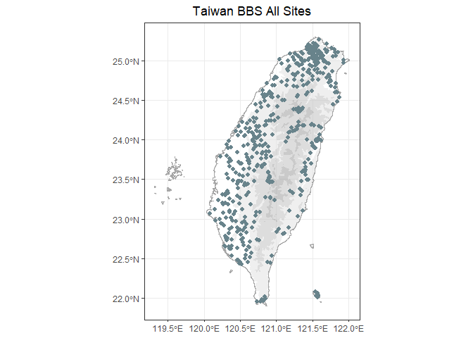

The goal of bbsTaiwan is to streamline Taiwan Breeding Birds Survey (BBS) data retrieval and analysis. It will support data retrieval from GBIF, where Taiwan BBS data are stored. ‘bbsTrim’ will also include the population trend modelling. Users can tailor species analysis, controlling data stratification, preparation, and modeling. The goal is to expand Taiwan BBS data access to the broader R-society in Taiwan.
💻 Set up
You can install and load the development version of bbsTaiwan from GitHub with:
⛺ How to use
If you need raw Taiwan BBS dataset on GBIF:
Taiwan BBS raw data can be accessed directly by typing the object name:
bbsTaiwan::occurrence
bbsTaiwan::event
bbsTaiwan::measurementorfacts
bbsTaiwan::extendedmeasurementorfactThe complete Taiwan BBS dataset on GBIF is following the Darwin Core Archive (DwC - A) format:
Occurrence: lists a set of times and locations at which particular species have been recorded
Event: lists includes the protocols used, the sample size, and the location for each
Measurement or Facts: includes additional information relating to the events
Extended Measurement or Fact: includes additional information relating to the taxon occurrences
bbsTaiwan also provide a workflow to process Taiwan BBS data:
This is a basic example which shows you how to use the package:
- Check out the distribution of the BBS sites and the number of sites that have been surveyed throughout the years:
bbs_history(type = "plot")
bbs_history(type = "table")
#> # A tibble: 8 × 6
#> year East Mountain North West Others
#> <chr> <int> <int> <int> <int> <int>
#> 1 2009 31 41 24 52 0
#> 2 2010 30 26 25 57 2
#> 3 2011 24 37 55 134 3
#> 4 2012 31 47 88 142 3
#> 5 2013 28 43 80 138 2
#> 6 2014 36 46 91 118 2
#> 7 2015 36 49 112 143 12
#> 8 2016 38 42 98 157 2
bbs_plotmap(NULL)
- Check all the sites that have been surveyed before
bbs_sites()
#> # A tibble: 4,160 × 20
#> id eventID parentEventID samplingProtocol sampleSizeValue sampleSizeUnit
#> <chr> <chr> <chr> <chr> <dbl> <chr>
#> 1 TWBBS_… TWBBS_… TWBBS_2009_A… Point count 31416. square metre
#> 2 TWBBS_… TWBBS_… TWBBS_2009_A… Point count 31416. square metre
#> 3 TWBBS_… TWBBS_… TWBBS_2009_A… Point count 31416. square metre
#> 4 TWBBS_… TWBBS_… TWBBS_2009_A… Point count 31416. square metre
#> 5 TWBBS_… TWBBS_… TWBBS_2009_A… Point count 31416. square metre
#> 6 TWBBS_… TWBBS_… TWBBS_2009_A… Point count 31416. square metre
#> 7 TWBBS_… TWBBS_… TWBBS_2009_A… Point count 31416. square metre
#> 8 TWBBS_… TWBBS_… TWBBS_2009_A… Point count 31416. square metre
#> 9 TWBBS_… TWBBS_… TWBBS_2009_A… Point count 31416. square metre
#> 10 TWBBS_… TWBBS_… TWBBS_2009_A… Point count 31416. square metre
#> # ℹ 4,150 more rows
#> # ℹ 14 more variables: samplingEffort <chr>, eventDate <date>, eventTime <chr>,
#> # locationID <chr>, country <chr>, countryCode <chr>, locality <chr>,
#> # decimalLatitude <dbl>, decimalLongitude <dbl>, geodeticDatum <chr>,
#> # coordinateUncertaintyInMeters <dbl>, coordinatePrecision <dbl>, site <chr>,
#> # plot <chr>- Look up the scientific name for species of interest
bbs_translate(c("白頭翁", "烏頭翁", "台灣噪眉"))
#> [1] "Pycnonotus sinensis" "Pycnonotus taivanus"
#> [3] "Trochalopteron morrisonianum"- Fetch the data for the species of interest. If you need the dataset across all species, leave the argument
target_speciesasNULL.
x <- bbs_fetch(target_species = bbs_translate("火冠戴菊鳥"))The output from bbs_fetch is a list with two elements: occurrence and site_info. occurrence is a tibble, showing all the observations for the target species within selected year range
x
#> # A tibble: 36,385 × 16
#> year month day site locationID decimalLatitude decimalLongitude weather
#> <dbl> <dbl> <dbl> <chr> <chr> <dbl> <dbl> <chr>
#> 1 2009 4 19 B14-01 B14-01_10 24.4 121. <NA>
#> 2 2009 6 7 B13-01 B13-01_06 24.5 121. <NA>
#> 3 2009 6 25 B13-01 B13-01_06 24.5 121. <NA>
#> 4 2009 5 26 B13-01 B13-01_05 24.5 121. <NA>
#> 5 2009 6 7 B13-01 B13-01_05 24.5 121. <NA>
#> 6 2009 5 26 B13-01 B13-01_03 24.5 121. <NA>
#> 7 2009 6 7 B13-01 B13-01_03 24.5 121. <NA>
#> 8 2009 6 25 B13-01 B13-01_01 24.5 121. <NA>
#> 9 2009 6 7 B13-01 B13-01_07 24.5 121. <NA>
#> 10 2009 5 29 B13-01 B13-01_08 24.5 121. <NA>
#> # ℹ 36,375 more rows
#> # ℹ 8 more variables: wind <chr>, habitat <chr>, scientificName <chr>,
#> # vernacularName <chr>, individualCount <dbl>, time_slot <chr>,
#> # distance <chr>, flock <chr>The function bbs_fetch can also take multiple species at the same time:
x <- bbs_fetch(bbs_translate(c("烏頭翁", "白頭翁")))- View the distribution of all the occurrence for the target species within selected year range
bbs_plotmap(bbs_translate(c("烏頭翁", "白頭翁")))